| 类型 | 规律 |
|---|---|
| 衍生物反应活性 | 酰氯 > 酸酐 > 酯 > 酰胺（> 羧酸根）；只能由活泼→不活泼 |
| 统一机理 | 亲核酰基取代 = 加成（Nu 进攻羰基 C，sp²→sp³）+ 消除（离去基走） |
| 酯碱性水解 | BAC2（碱-酰氧断裂-双分子），不可逆（羧酸根夺质子拉平衡） |
| 酯酸性水解 / 酯化 | AAC2，可逆；¹⁸O 标记证明酰氧断裂（醇 O 进酯） |
| Claisen 酯缩合 | 2 个有 α-H 的酯 + EtONa → β-酮酸酯；酯须 ≥2 个 α-H |
| 丙二酸酯合成法 | → 造支链羧酸 RCH₂COOH（拔氢-烷基化-水解-脱羧） |
| 乙酰乙酸酯合成法 | → 造甲基酮 CH₃COCH₂R（拔氢-烷基化-水解-脱羧） |
| β-羰基羧酸脱羧 | β-酮酸/丙二酸受热极易脱羧（六元环过渡态经烯醇） |
| Hofmann 降解 | RCONH₂ + Br₂/NaOH → RNH₂，少一个碳，经异氰酸酯 |
| Gabriel 合成 | 邻苯二甲酰亚胺 K 盐 + RX → 水解 → 纯伯胺（不多烷基化） |
| 还原口诀 | 酯→1° 醇；酰胺→胺(不增碳)；腈→1° 胺(增 1 碳)；酰氯停在醛用 Rosenmund |
| 题型 | 考点 | 跳转 |
|---|---|---|
| 活性排序 / 选择 | 酰氯>酸酐>酯>酰胺 | 13.1 五类化合物 |
| 机理（弯箭头） | 亲核酰基取代通用 | 13.2 通用机理 |
| 水解 / 醇解 / 氨解 | 相互转化网络 | 13.3 相互转化 |
| 机理 / 同位素 | 酯水解 BAC2 / AAC2 / ¹⁸O | 13.4 酯水解机理 |
| 反应填空 | 还原（酯/酰胺/腈/酰氯） | 13.5 还原 |
| 机理 / 完成 | Claisen 酯缩合 / Dieckmann | 13.6 Claisen 缩合 |
| 脱羧 | β-酮酸 / 丙二酸脱羧 | 13.7 脱羧 |
| 合成题（造羧酸） | 丙二酸酯合成法 | 13.8 丙二酸酯法 |
| 合成题（造甲基酮） | 乙酰乙酸酯合成法 | 13.9 乙酰乙酸酯法 |
| 机理 / 完成（降一碳制胺） | Hofmann 降解（异氰酸酯） | 13.10 Hofmann 降解 |
| 合成题（制纯伯胺） | Gabriel 合成 | 13.11 Gabriel |
| 鉴别 | 酯/酰胺/腈 区分 | 13.12 鉴别 |
羧酸衍生物 = 羧酸的 —OH 被别的基团换掉得到的产物。核心五类（腈虽不含羰基，但水解 / 还原行为与衍生物一脉相承，一起记）：
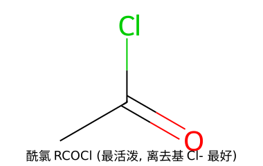
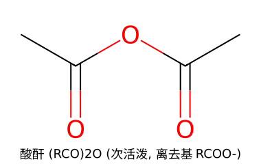
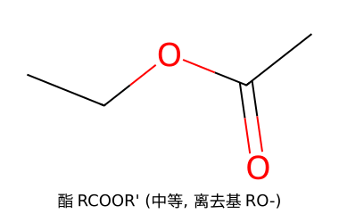
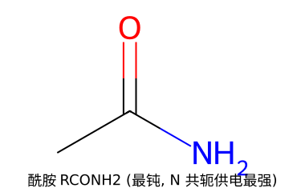
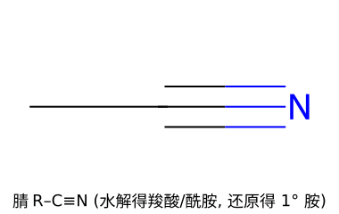
酰氯 > 酸酐 > 酯 > 酰胺（> 羧酸根）
判定靠两条方向一致的理由：
这是整章的"母机理"。所有水解、醇解、氨解、Claisen 缩合都套这个模板：先加成成四面体中间体，再消除离去基重建 C=O。以乙酰氯醇解（+ CH₃OH → 乙酸甲酯）为例：
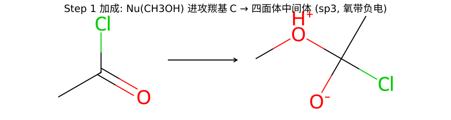
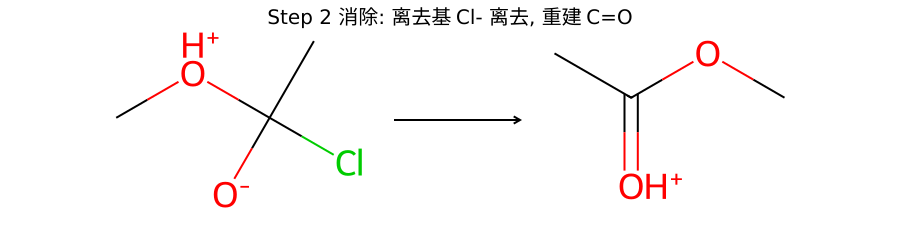
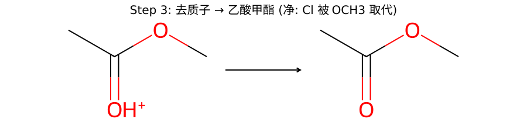
Step 1 加成：亲核试剂（这里是甲醇的 O）用孤对电子进攻平面羰基 C，C 由 sp²→sp³，原来的 π 电子被推到 O 上 → 生成带氧负的四面体中间体（决速步）。
Step 2 消除：O 上的负电对回头压下来重建 C=O，把离去基（Cl⁻）挤走 → 得质子化的酯。
Step 3：去掉多余质子 → 乙酸甲酯。净结果：Cl 被 OCH₃ 取代。
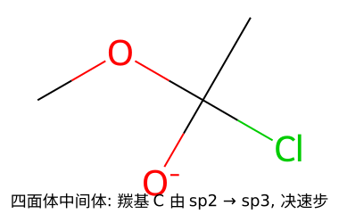
羰基 C 由 sp²（平面）变成 sp³（四面体），同时连着进来的 Nu、原来的离去基、和氧负。它能否往前走取决于离去基好不好走——这就是活性顺序的本质。
把"由活泼→不活泼"的方向铁律落实到具体反应。酰氯是合成枢纽（最活泼，一步能到所有更钝的衍生物）。先由羧酸用 SOCl₂ 造酰氯：
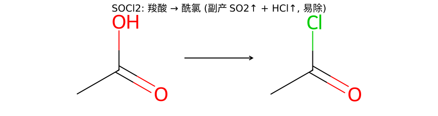
RCOOH + SOCl₂ → RCOCl + SO₂↑ + HCl↑。副产物都是气体，跑掉即可，产物纯。也可用 PCl₅ / PCl₃。
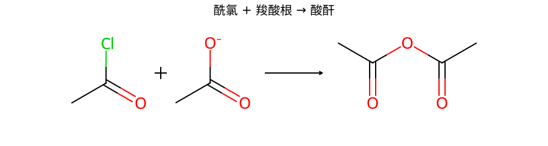
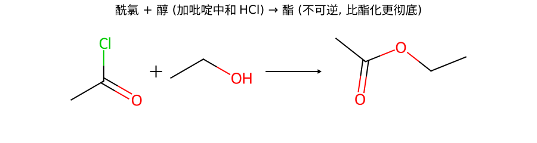
常加吡啶 / Et₃N 中和放出的 HCl。这条路线比"酸 + 醇"直接 Fischer 酯化更彻底——酯化是可逆平衡，经酰氯则不可逆。
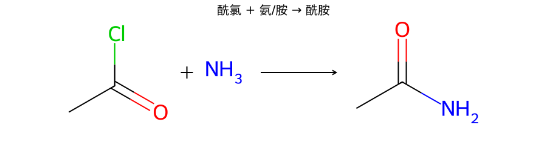
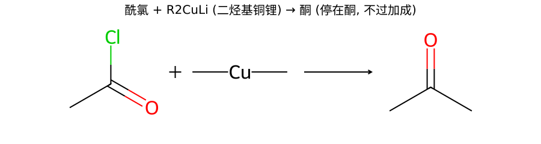
二烃基铜锂（Gilman 试剂）温和，只取代一次停在酮，不会过加成到 3° 醇（与 RMgX 不同）。
| 底物 | 水解条件 | 产物 |
|---|---|---|
| 酰氯 | 遇水即水解（剧烈） | 羧酸 + HCl |
| 酸酐 | 较易水解 | 2 分子羧酸 |
| 酯 | 酸催化可逆 / 碱(皂化)不可逆 | 羧酸(根) + 醇 |
| 酰胺 | 需较强酸/碱 + 加热（最难） | 羧酸(根) + 胺/NH₃ |
| 腈 | 酸/碱 + 加热（中途经酰胺） | 羧酸（或先停在酰胺） |
难易顺序与活性顺序完全一致：酰氯最易、酰胺最难。
命名拆解：Base（碱）+ ACyl-oxygen（酰氧断裂）+ 2（双分子）。以乙酸乙酯 + OH⁻ 为例：
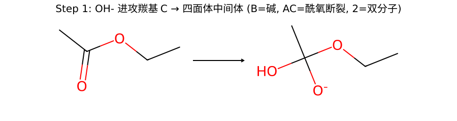
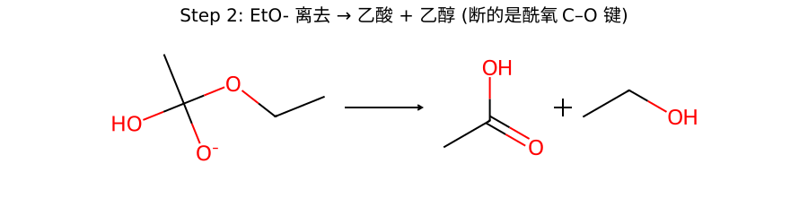
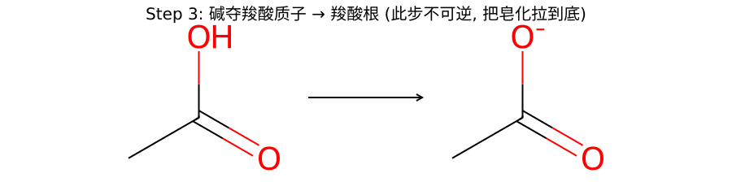
Step 1：OH⁻ 进攻羰基 C → 四面体中间体（套用 13.2 母机理）。
Step 2：消除 EtO⁻ → 乙酸 + 乙醇（断的是酰氧 C–O 键，不是醇侧的 O–C 键）。
Step 3 关键：碱立刻夺走羧酸的质子生成羧酸根 —— 这步把整个平衡拉到底，所以皂化不可逆。
酸催化酯化 RCOOH + R'OH ⇌ RCOOR' + H₂O，机理是Acid（酸）+ ACyl-oxygen + 2，与皂化对称但可逆。
经典证据：用 ¹⁸O 标记醇的氧（R'–¹⁸OH）做酯化，发现 ¹⁸O 全部进了酯（RCO–¹⁸O–R'），生成的水里没有 ¹⁸O。
CH₃CO–OH + CH₃–¹⁸OH ⇌ CH₃CO–¹⁸O–CH₃ + H₂O
结论：断裂的是羧酸的酰氧 C–OH 键（酰氧断裂），脱去的水里的 O 来自羧酸而非醇。这正好与 BAC2/AAC2 经四面体中间体、消除 RO⁻ 的机理吻合。
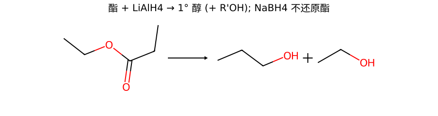
LiAlH₄ 把酯一路还原到伯醇（同时放出 R'OH）。NaBH₄ 太弱，不还原酯（只还原醛酮）。
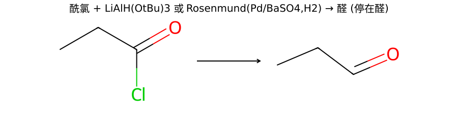
酰氯遇 LiAlH₄ 会一路冲到 1° 醇；要停在醛，用 LiAlH(OtBu)₃（三叔丁氧基氢化铝锂）或 Rosenmund 还原（Pd/BaSO₄ 毒化催化剂 + H₂）。
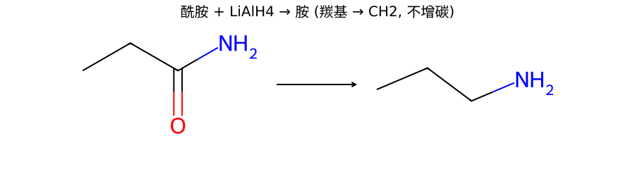
RCONH₂ → RCH₂NH₂：原来的羰基 C 变成 CH₂，碳数不变。
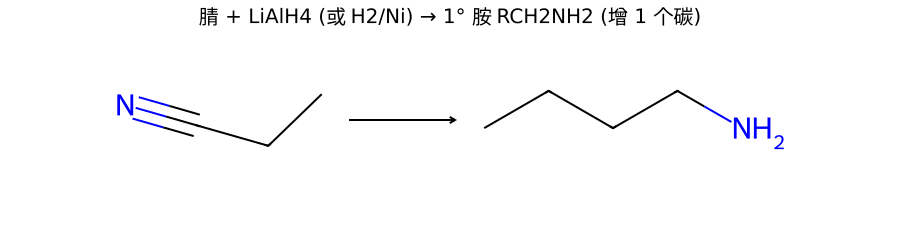
R–C≡N → R–CH₂–NH₂：腈的 C 进入了 CH₂NH₂，所以比 R 多 1 个碳——这是合成上"增碳制伯胺"的常用法（先 RX + NaCN 增碳成腈，再还原）。
典型：2 分子乙酸乙酯 → 乙酰乙酸乙酯（CH₃CO–CH₂–COOEt，1,3-二羰基）。这也是乙酰乙酸酯合成法的原料来源。
$$2\ \text{CH}_3\text{COOEt} \xrightarrow{\text{EtONa};\ \text{H}_3\text{O}^+} \text{CH}_3\text{CO-CH}_2\text{-COOEt} + \text{EtOH}$$
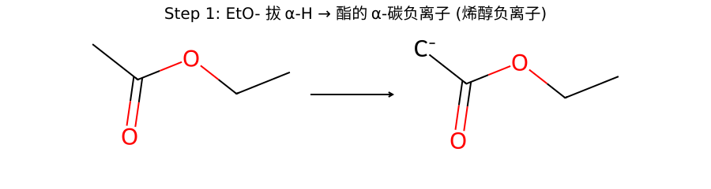
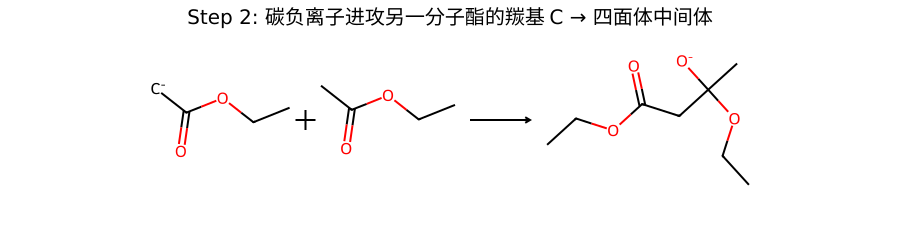
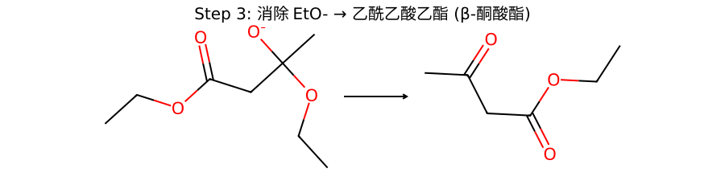
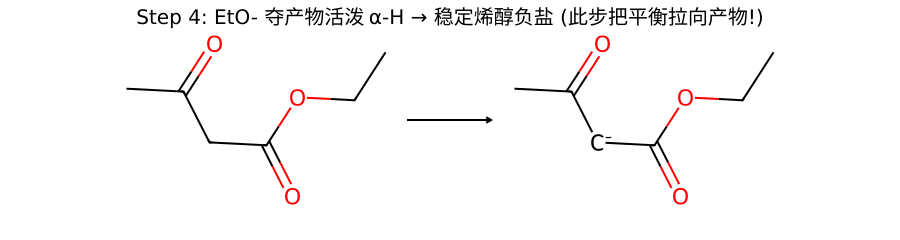
Step 1：EtO⁻ 拔走一个酯的 α-H → 酯的 α-碳负离子（烯醇负离子）。
Step 2：这个碳负离子作亲核体，进攻另一分子酯的羰基 C → 四面体中间体（又是母机理！）。
Step 3：消除 EtO⁻ → 乙酰乙酸乙酯（β-酮酸酯）。
Step 4 关键：产物的 α-H 夹在两个羰基之间，酸性极强，立刻被 EtO⁻ 拔成稳定的烯醇负盐 —— 这一步把平衡彻底拉向产物（最后再 H₃O⁺ 酸化得中性产物）。
羧基的 β 位若有 C=O（即 β-酮酸、β-二酸如丙二酸），受热极易脱 CO₂；普通羧酸（如乙酸）很难脱羧。
$$\text{RCOCH}_2\text{COOH} \xrightarrow{\Delta} \text{RCOCH}_3 + \text{CO}_2\uparrow$$
脱羧走六元环过渡态：羧基的 OH 氢转移到 β 位的羰基 O 上，同时 C–C 键断裂放出 CO₂，先生成烯醇，烯醇再互变成更稳定的酮（或酸）。
关键：必须有 β-位羰基 O 在六元环里"接住"那个氢——普通羧酸搭不出这个六元环，所以脱羧难。丙二酸的两个羧基里，一个就充当另一个的"β-羰基"，故同样易脱羧。
$$\text{CH}_2(\text{COOEt})_2 \xrightarrow{\text{EtONa}} \overset{-}{\text{CH}}(\text{COOEt})_2 \xrightarrow{\text{RX}} \text{RCH}(\text{COOEt})_2 \xrightarrow{\text{H}_3\text{O}^+,\Delta} \text{RCH}_2\text{COOH}$$
核心：被两个酯基夹住的活泼亚甲基（pKa≈13）容易被 EtONa 拔成碳负离子，去做 SN2 烷基化；最后水解 + 脱羧卸掉"工具羧基"。
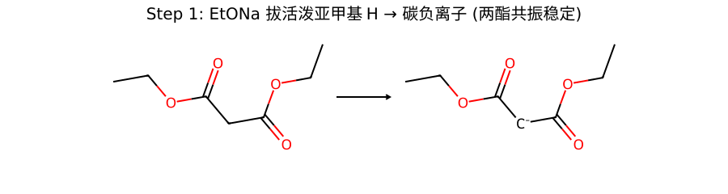
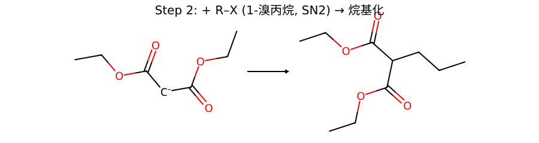
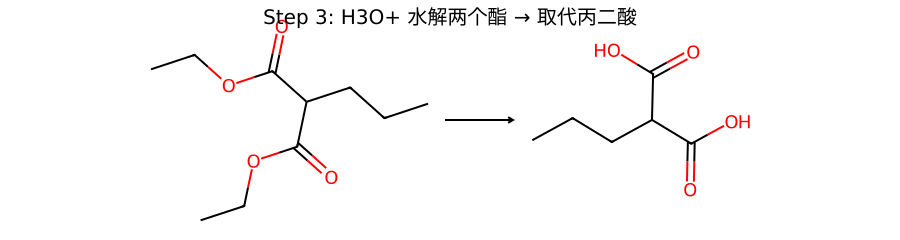
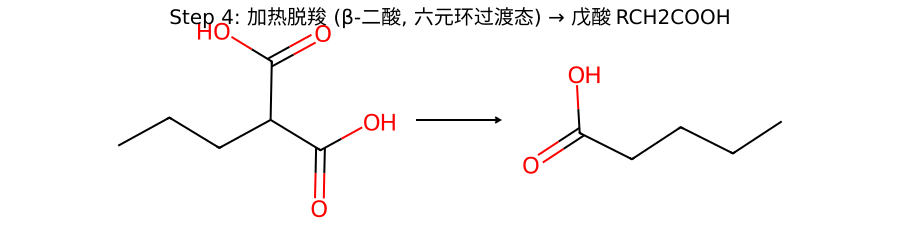
$$\text{CH}_3\text{COCH}_2\text{COOEt} \xrightarrow{\text{EtONa}} \text{烯醇负} \xrightarrow{\text{RX}} \text{CH}_3\text{COCHR-COOEt} \xrightarrow{\text{稀碱},\Delta} \text{CH}_3\text{COCH}_2\text{R}$$
与丙二酸酯法同构，只是活泼 H 夹在一个酮 + 一个酯之间（pKa≈11）。
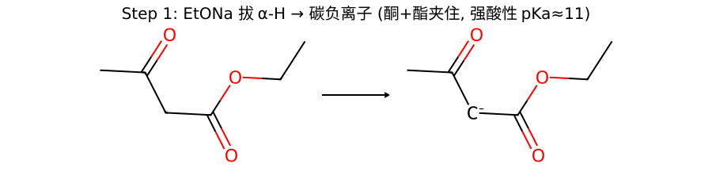
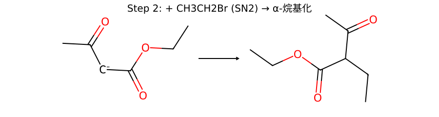
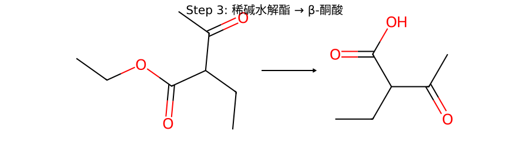
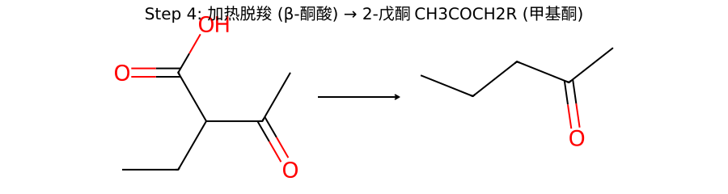
以丙酰胺 → 乙胺为例。产物伯胺比原酰胺少一个碳，关键是中间经过异氰酸酯（R 基迁移到 N）。
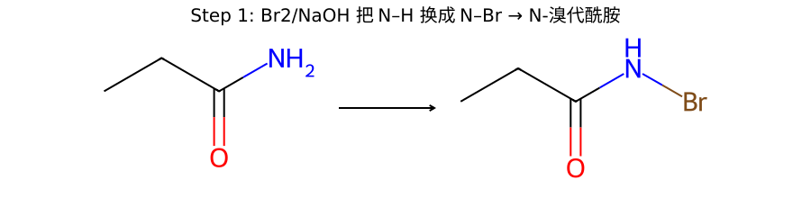
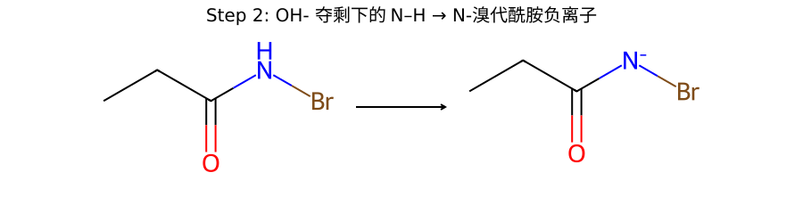
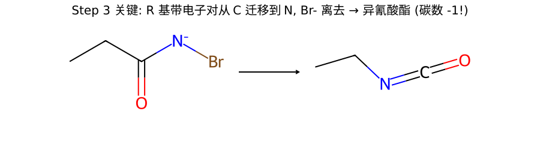
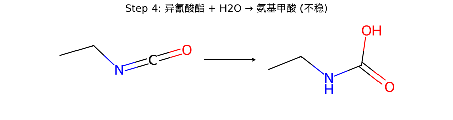
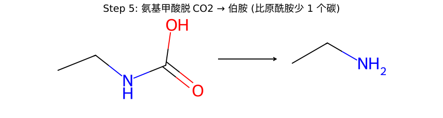
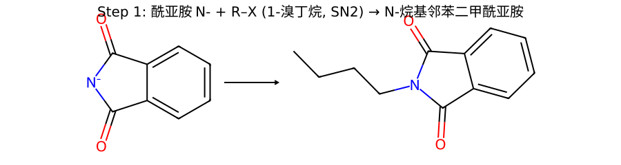
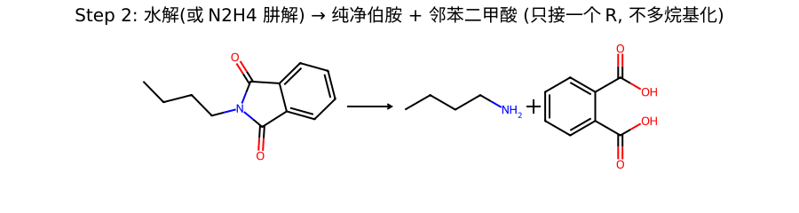
Step 1：邻苯二甲酰亚胺的 N⁻（酰亚胺 N–H 酸性强，易成盐）作亲核体，对 R–X 做 SN2 → N-烷基邻苯二甲酰亚胺。
Step 2：水解（或用肼 N₂H₄ 肼解）→ 纯净伯胺 + 邻苯二甲酸（副产物）。
| 化合物 | 特征 / 试剂 | 现象 |
|---|---|---|
| 酰氯 | 遇水/醇剧烈反应；+ AgNO₃ | 立即放热水解，加 AgNO₃ 生成 AgCl↓ |
| 酯 | 异羟肟酸铁试验（NH₂OH/FeCl₃） | 显紫红色（酯特征） |
| 酰胺 | 强碱共热放氨；难水解 | 湿润红色石蕊试纸变蓝（NH₃） |
| 腈 | 强酸/碱长时间煮才水解 | 水解后才显羧酸性 |
| β-酮酸酯 | FeCl₃（含烯醇式 1,3-二羰基） | 显紫色（烯醇式与 Fe³⁺ 配位） |
目标 CH₃COCH₂CH₂CH₃ 是甲基酮 → 用乙酰乙酸酯法。
关键：所接的乙基（来自 CH₃CH₂Br）+ 原乙酰甲基拼成 2-戊酮；别漏脱羧步。
目标 CH₃CH₂CH₂COOH = C₂H₅CH₂COOH，是"乙酸 α 位接乙基"型支链羧酸 → 丙二酸酯法。
CH₃CH₂CONH₂ ──Br₂/NaOH──► 乙胺 CH₃CH₂NH₂（不是丙胺！）
原因：经异氰酸酯 CH₃CH₂–N=C=O 中间体，原来的羰基碳以 CO₂ 形式离开 → 产物少一个碳。
机理要点：N-溴代 → 去质子 → R 迁移到 N（同时 Br⁻ 走）成异氰酸酯 → 水解 → 脱羧得伯胺。
直接 Fischer 酯化（CH₃COOH + EtOH/H⁺）是可逆平衡，产率受限。改走酰氯路线：
CH₃COOH ──SOCl₂──► CH₃COCl ──C₂H₅OH（吡啶）──► CH₃COOC₂H₅
酰氯醇解不可逆，产率高；SOCl₂ 的副产物 SO₂/HCl 都是气体易除。
分子内 Claisen（Dieckmann 缩合）：一端的 α-碳负离子进攻同分子另一端的酯羰基，关五元环。
产物 = 2-氧代环戊烷甲酸乙酯（环状 β-酮酸酯）。
能成五/六元环时分子内缩合最有利。
要增 1 个碳的伯胺 → 腈法：
C₄H₉Br ──NaCN（SN2）──► C₄H₉CN（戊腈）──LiAlH₄──► C₄H₉CH₂NH₂（戊胺）
腈的 C 进入 CH₂NH₂，所以产物比原卤代烃多 1 个碳。若想不增碳得纯伯胺，则用 Gabriel。
酰氯最活泼，顺序：酰氯 > 酸酐 > 酯 > 酰胺。
① 离去基好走：Cl⁻ > RCOO⁻ > RO⁻ > NH₂⁻；② 相邻杂原子给羰基共轭供电：N 最强（酰胺最钝）、Cl 几乎不给（酰氯最活泼）。两条方向一致。
→ 详见 13.1
Nu 进攻羰基 C 后，C 由 sp²→sp³ 生成带氧负的四面体中间体。
衍生物羰基 C 上有离去基，中间体会消除离去基重建 C=O → 整体"取代"；醛酮没离去基，停在加成产物（醇）。
→ 详见 13.2
代号 BAC2（碱-酰氧断裂-双分子）。OH⁻ 加成 → 四面体中间体 → 消除 RO⁻ 得羧酸 → 碱立刻夺羧酸质子成羧酸根，这步把平衡彻底拉到底 → 不可逆。
→ 详见 13.4
¹⁸O 全部进了酯（RCO–¹⁸O–R'），水里没有。说明断的是羧酸的酰氧 C–OH 键（酰氧断裂），脱去的水里 O 来自羧酸而非醇。
→ 详见 13.4
酯必须有 ≥2 个 α-H。因为产物（β-酮酸酯）要保留 1 个夹在两羰基间的活泼 H，被 EtO⁻ 拔成稳定烯醇负盐锁定平衡。
产物是 β-酮酸酯（1,3-二羰基），别和羟醛缩合的 β-羟基醛酮混。
→ 详见 13.6
β-羰基羧酸脱羧走六元环过渡态：β 位的羰基 O 在六元环里接住羧基的 H，同时 C–C 断放 CO₂ → 经烯醇互变成酮/酸。
普通羧酸（乙酸）没有 β-羰基，搭不出这个六元环，所以脱羧难。机理是协同 H 转移，不画碳负离子。
→ 详见 13.7
给 乙胺 CH₃CH₂NH₂（少一个碳！）。关键中间体 = 异氰酸酯 CH₃CH₂–N=C=O。
R 基带电子对从羰基 C 迁移到 N（Br⁻ 同时离去），原羰基碳最后以 CO₂ 离开 → 产物比原酰胺少 1 个碳，且一定是伯胺。
→ 详见 13.10
直接氨解会过度烷基化（伯胺更亲核，继续被烷基化成 2°/3°/季铵混合物）。
干净替代：① Gabriel 合成（酰亚胺 N 一次只接一个 R，水解得纯伯胺，不增碳）；② 腈还原（RX→RCN→RCH₂NH₂，增 1 碳）。
→ 详见 13.11
腈还原增 1 碳：R–C≡N → R–CH₂–NH₂（腈的 C 进了 CH₂NH₂）。
酰胺还原不增碳：RCONH₂ → RCH₂NH₂（羰基 C 原地变 CH₂）。
需要增碳制伯胺用腈法；只想还原不动碳骨架用酰胺；要减碳则用 Hofmann 降解。
→ 详见 13.5